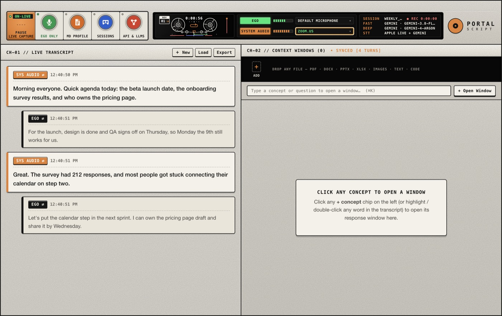
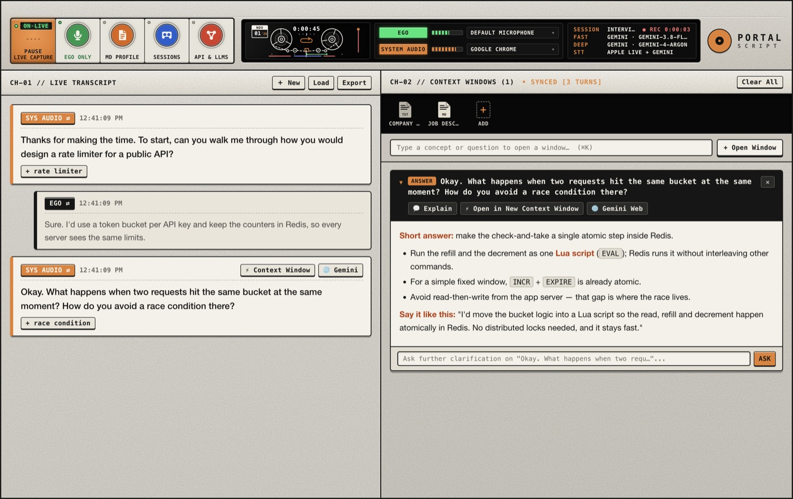
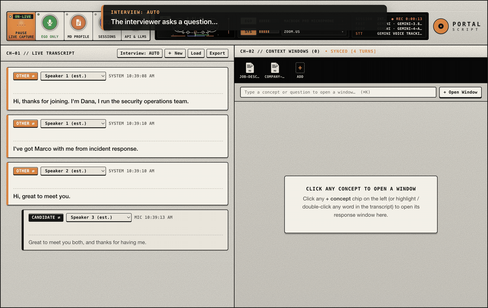
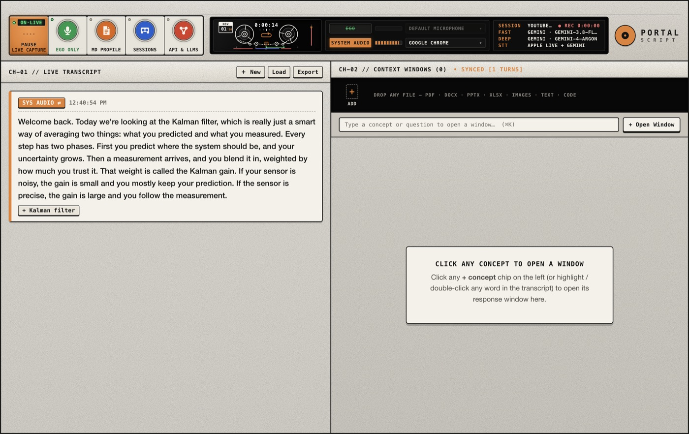
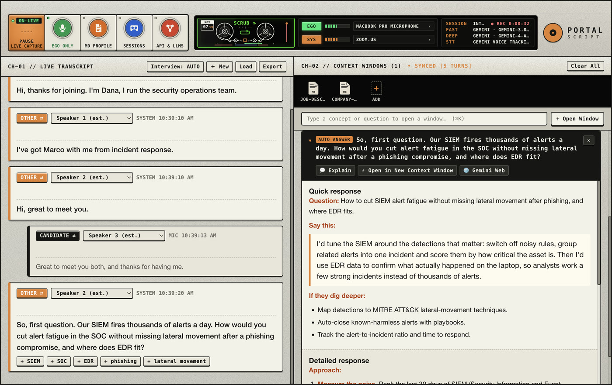
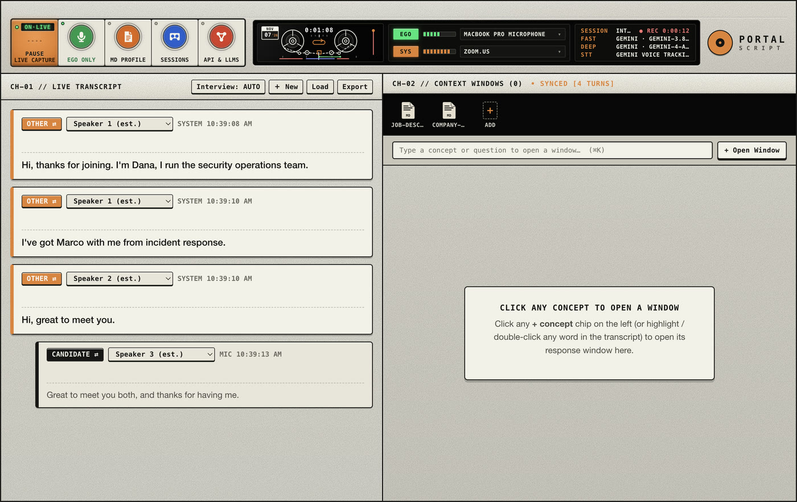

Meeting notes for Zoom, Teams and Meet
Your voice and the meeting app are transcribed side by side, so you always know who said what. Export a timestamped transcript when you're done.
PortalScript writes down your meetings, lectures and conversations as they happen. Click any line for an answer, highlight a phrase for an explanation. Everything stays on your Mac.
macOS 14+ · Apple Silicon & Intel · No account · Source on GitHub

In interview mode PortalScript now spots the question for you. A quick answer appears in seconds, and a detailed one loads right underneath.

PortalScript listens to your microphone and to any app on your Mac, so there's no bot joining your call and nothing to install in Zoom or Teams.

Your voice and the meeting app are transcribed side by side, so you always know who said what. Export a timestamped transcript when you're done.

Capture one app's audio only. Key terms show up as chips; click one for a plain-English explanation without pausing the video.

Add your CV and the job description, then run a mock interview. Questions are spotted automatically and answered from your own experience, quick version first.

Speaker tracking tells several people apart, even on one call or one mic. Or just talk and turn your thoughts into notes.
Built for the moment someone says a word you don't know.
Click any line to get a short answer and key points in a context window.
Questions are spotted as they're asked: a quick answer first, the detailed one right after.
SIEM, EDR, MFA, lateral movement: explained the moment someone says them.
Speaker tracking numbers each voice, and you can fix any line in one click.
Select a phrase and it's explained in the context of the whole conversation.
Drop in PDFs, Word, PowerPoint, Excel, images or notes so answers use your material.
Listen to all system audio or just one app, so notifications and music stay out.
Transcript, audio recordings and AI answers are saved to a folder as you go.
Gemini, OpenAI, Anthropic, Groq, OpenRouter, any compatible endpoint, or local Ollama.
There's no PortalScript account and no PortalScript server. Recordings and transcripts are saved in a private folder on your Mac. The app only talks to the AI and speech services you set up, and only for the things you ask.
Want nothing to leave your Mac at all? Use Apple's on-device speech recognition and a local model through Ollama.
Step-by-step help with screenshots for every use case is in the user guide.
Yes, for any noncommercial use. You only pay your AI provider if you choose a paid one, or nothing at all with a local Ollama model.
Yes. It records your microphone and the audio of whichever app you choose, so it works with any meeting app, browser or video player. No bot joins your call.
In ~/Library/Application Support/PortalScript on your Mac, or a folder you pick.
There's no PortalScript cloud.
Yes, with Apple's on-device speech recognition and a local model through Ollama.
Please do. Many countries and companies require everyone's consent before a conversation is recorded or transcribed, and some interviews don't allow AI help. Check the rules that apply to you.
The app isn't notarized by Apple yet. Every release is built by GitHub Actions from this public source code with a verifiable build attestation. Go to System Settings → Privacy & Security and click Open Anyway.